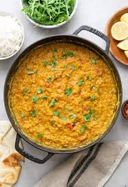

Red Lentil Dahl

Description
Indian dahl made with red lentils. Cheap, nutritious, healthy and tasty.
Ingredients
- 500 g (1 small pack) dry red lentils
- 4 cloves of garlic, thinly sliced or crushed (at least 😊)
- 6 cups (1440 ml) water
- 2 and a ½ tablespoons of curry paste
- Optional: 8 Green Finger chillies or 4 Scotch Bonnet chillies (whole)
Steps
- Mix the curry paste with a ¼ mug of water to make a sauce.
- Add lentils, water, garlic, curry sauce and chillies (if using) to a large pan.
- Cover, bring to a boil and let simmer for about 30 minutes.
- Season with black pepper and salt.
- Serve warm with basmati rice.
Home